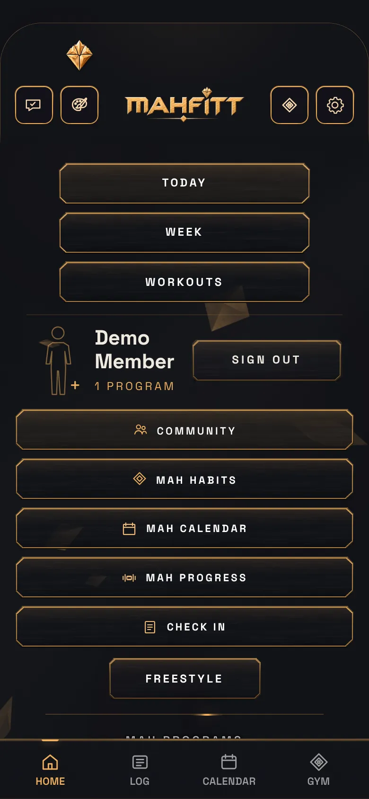
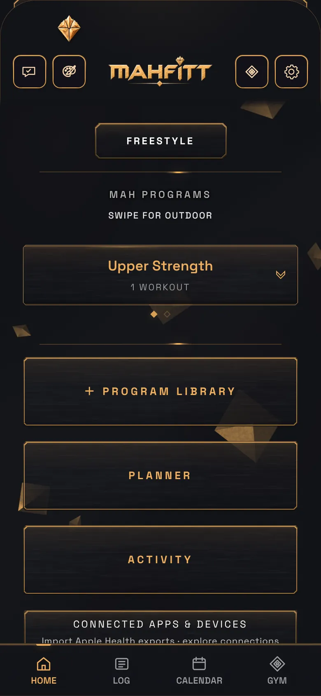
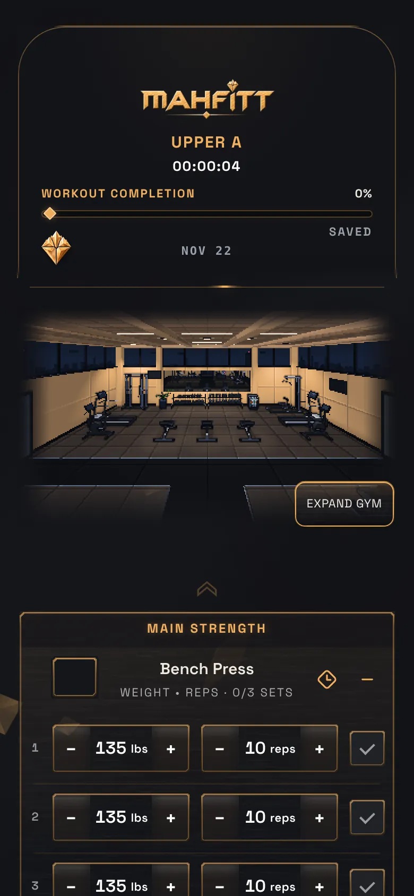
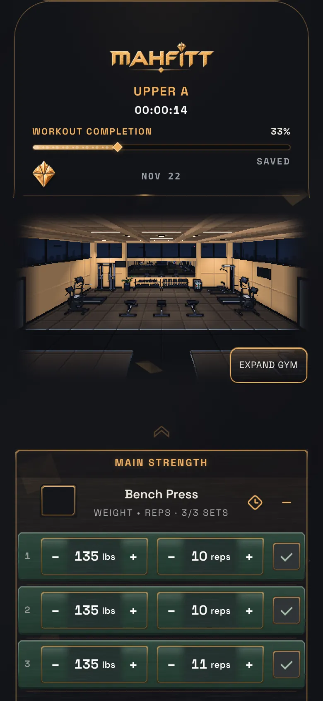
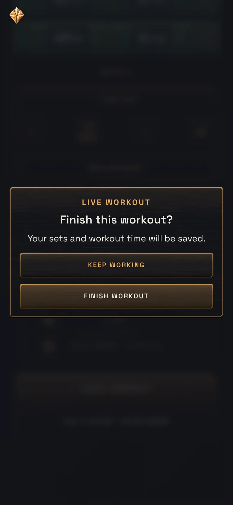
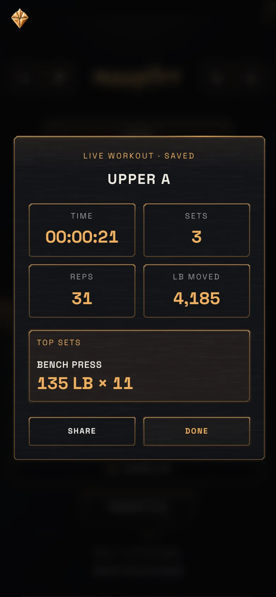
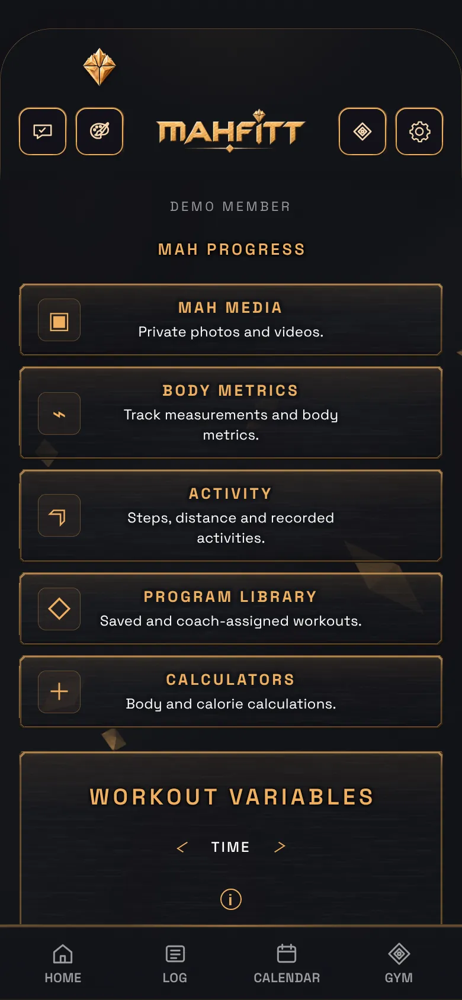
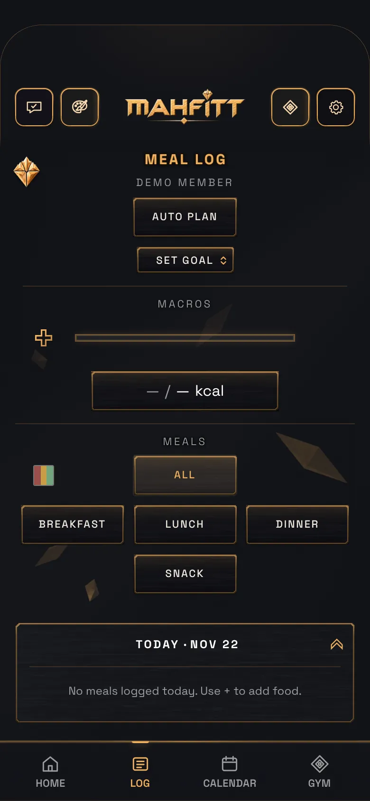

AI output review
Defined how AI-generated workout plans must honor equipment, sets and rest periods. Offline testing passed 31 groups of output-quality checks and 15 groups of program-constraint checks.

MAHFITT is a training app I designed and test on my phone. Start today’s workout, log each set, and the app works out your next target and tells you why.
No account · sample data · about two minutes
The app today
Captured on a phone-sized screen with a sample account. Swipe or scroll sideways.








Recorded, not mocked up
From the current build with a sample account: open Workouts, start Upper A, log three bench sets (the last one at 11 reps), finish, and read the recap.
33 seconds · no sound · recorded November 2026
See why
After a workout, MAHFITT compares what you did with the target and explains the next one in plain words. The guest workout runs the same rules file as the app.
My part
Defined how AI-generated workout plans must honor equipment, sets and rest periods. Offline testing passed 31 groups of output-quality checks and 15 groups of program-constraint checks.
Caught a generated exercise image that had passed review because the character added an unintended front raise, and specified the correct arm and weight position.
Defined how an interrupted save should recover. A local build passed 239 browser checks, including a retry that avoided creating a duplicate program.